고장사례 및 검색 › S클래스 W222
벤츠 S클래스 W222 워터펌프 교환과 9단 자동변속기 오일팬 · 미션오일 교환 — 필터가 붙어 있는 오일팬과 유온 기준 레벨 조정
- 차량
- 벤츠 S클래스 W222 · 172,422 km
- 증상
- 냉각계통과 자동변속기 점검으로 입고하셨습니다. 워터펌프와 9단 자동변속기 오일팬을 함께 보기로 했습니다
- 원인
- 두 가지 작업이 한 번에 들어갔습니다. 하나는 냉각계통의 워터펌프, 다른 하나는 9단 자동변속기의 오일팬입니다. 서로 다른 계통이지만 둘 다 「때를 놓치면 비용이 몇 배로 뛰는」 자리라 같이 설명드립니다.
먼저 워터펌프입니다. 사진에 탈거품과 신품을 양면으로 놓고 찍었습니다. 임펠러 쪽을 보시면 날개 형상과 표면 상태를 비교하실 수 있습니다. 펌프를 들어낸 자리 사진도 같이 올렸습니다.
부동액은 규정품으로 채웠습니다. 벤츠는 규격이 정해져 있고 색으로 구분되는데, 다른 규격을 섞으면 첨가제끼리 반응해 젤처럼 뭉치는 경우가 있습니다. 그 덩어리가 라디에이터와 히터코어의 가는 통로를 막으면 펌프가 멀쩡해도 냉각이 안 됩니다. 색만 맞춰 아무거나 보충하면 안 되는 이유입니다. 채운 뒤에는 계통의 공기를 빼냈습니다.
두 번째가 9단 자동변속기입니다. 이 미션의 오일팬은 구조가 특이합니다. 사진에서 신품과 탈거품을 나란히 놓은 장면을 보시면, 팬 안쪽에 여과지가 통째로 붙어 있는 것이 보이실 겁니다. 필터가 팬과 한 몸입니다.
그래서 이 미션은 오일만 갈 수가 없습니다. 필터를 새것으로 쓰려면 팬을 통째로 교환해야 합니다. 가스켓도 팬 테두리에 일체로 붙어 있어 따로 사지 않습니다. 오래된 필터를 그대로 두고 오일만 바꾸면, 새 오일이 막힌 여과지를 지나면서 유압이 떨어지고 변속 충격으로 돌아옵니다.
팬을 내리려면 미션 마운트와 크로스멤버를 먼저 풀어야 손이 들어갑니다. 사진에 떼어낸 마운트가 보입니다. 팬을 들어내면 밸브바디가 그대로 드러납니다. 변속을 담당하는 유압 회로와 솔레노이드가 모여 있는 곳이라, 이 상태에서는 이물질이 들어가지 않게 주의해서 작업합니다.
오일 양은 드레인으로 빠지는 만큼만 교환됩니다. 토크컨버터와 오일쿨러, 유로에 남아 있는 오일까지 한 번에 다 빼낼 수는 없습니다. 교환하고 얼마 안 가 색이 다시 어두워지는 것은 그 때문이고, 고장이 아닙니다.
마지막이 이 작업에서 제일 까다로운 단계입니다. 이 미션에는 딥스틱이 없습니다. 눈으로 양을 볼 수 없다는 뜻입니다. 레벨은 오일 온도를 규정 범위에 맞춘 상태에서 오버플로 플러그로 잡습니다. 식었을 때 맞추면 실제로는 넘치고, 너무 뜨거울 때 맞추면 모자랍니다. 적으면 유압이 떨어지고 많으면 오일이 거품이 되어 역시 유압이 떨어집니다. 변속 충격과 미끄러짐이 여기서 나옵니다.
자동변속기 오일을 「무교환」으로 알고 계신 분이 많습니다. 설계 수명이 길다는 뜻이지 영구적이라는 뜻은 아닙니다. 17만 km를 넘긴 차라면 상태를 보고 판단하는 쪽이 맞습니다. - 수리내역
- 냉각계통 점검 · 구동벨트 탈거 · 워터펌프 탈거 후 신품 교환 · 구동벨트 재체결 · 부동액 주입 · 계통 에어빼기 · 미션 마운트 · 크로스멤버 탈거 · 미션오일 배출 · 자동변속기 오일팬 탈거 — 밸브바디 확인 · 오일팬 신품 교환 (필터 일체형) · 미션 마운트 · 크로스멤버 재조립 · 미션오일 주입 · 유온 규정 범위에서 오버플로 플러그로 레벨 조정 · 시운전 후 누유 · 누수 재점검
- 교환부품
- 워터펌프 · 부동액 · 자동변속기 오일팬 (필터 일체형) · 미션오일 (9단 4.5L)
정비 사진 17장
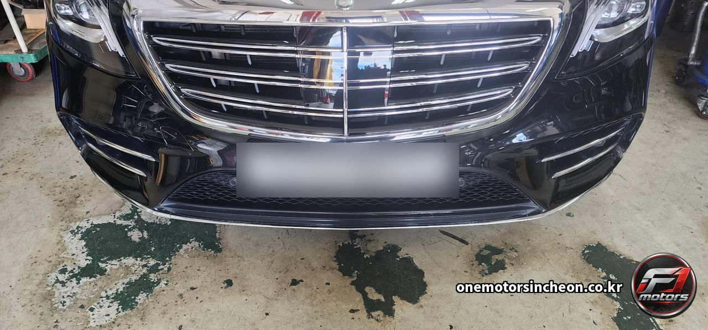
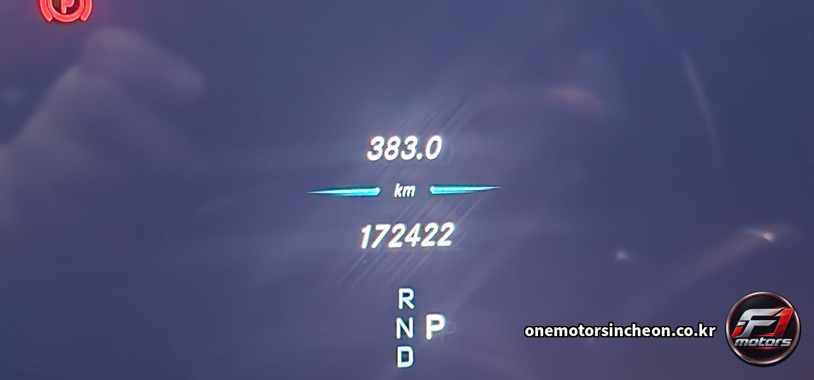
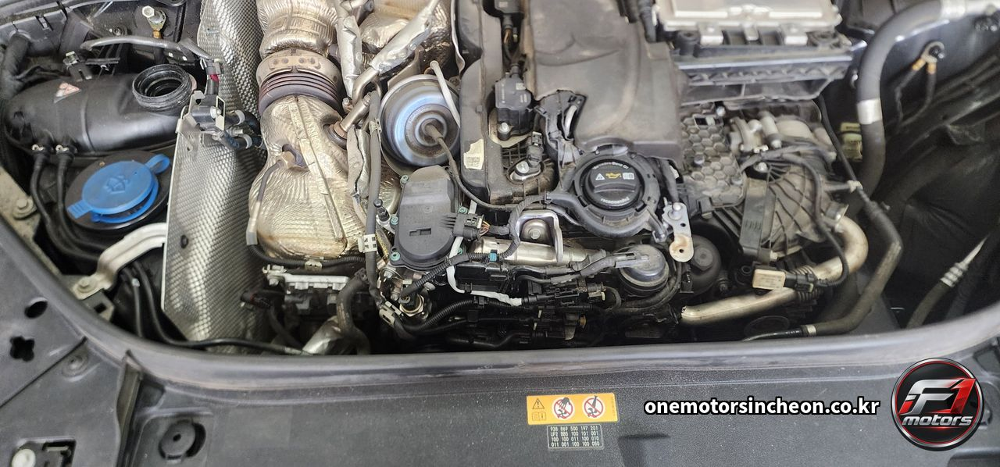
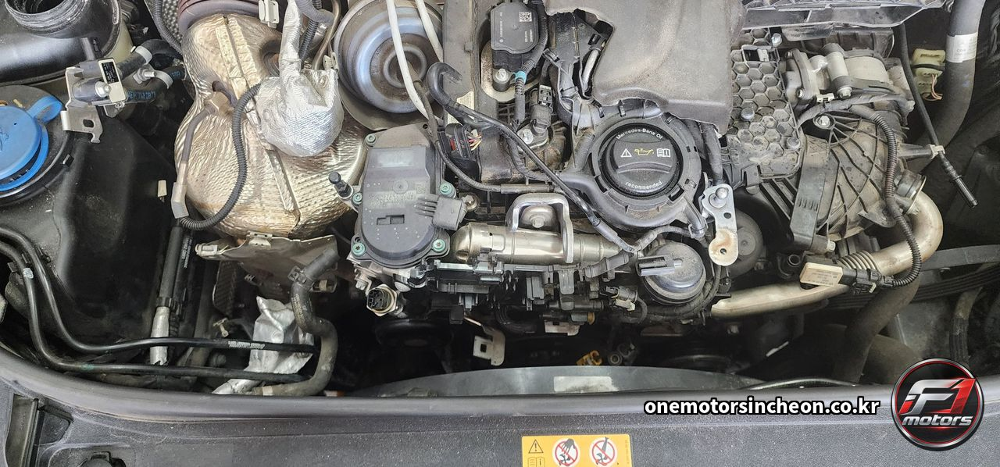
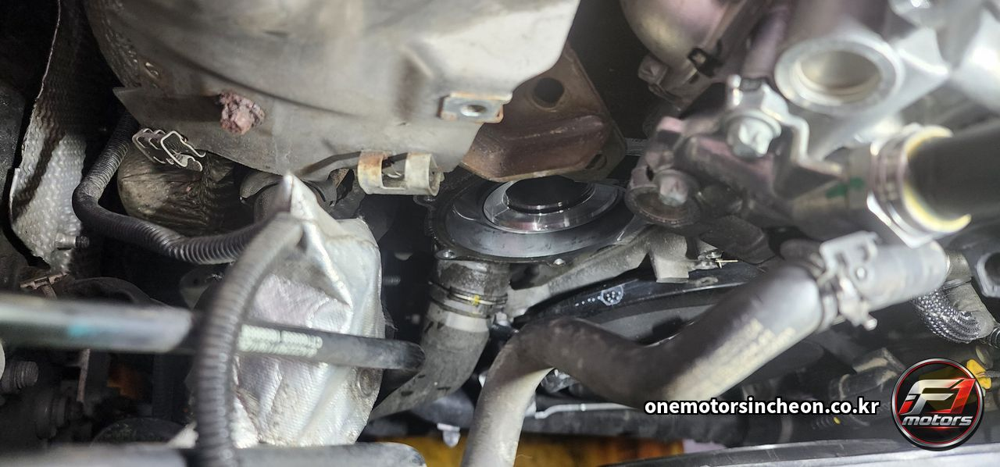
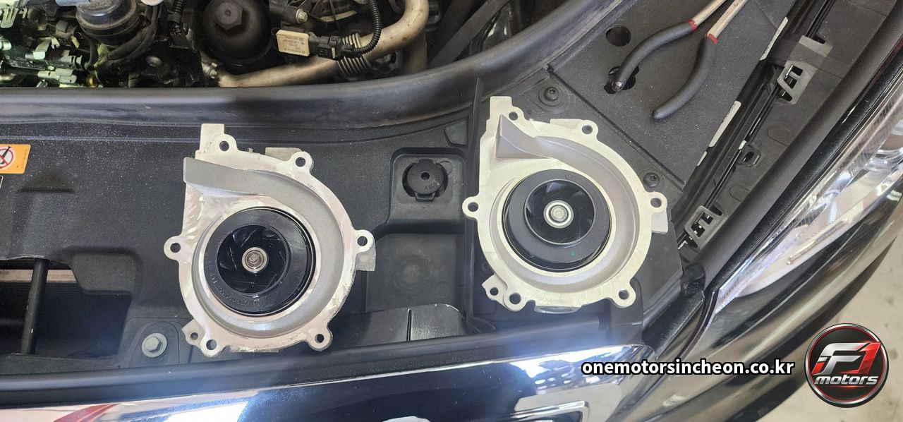
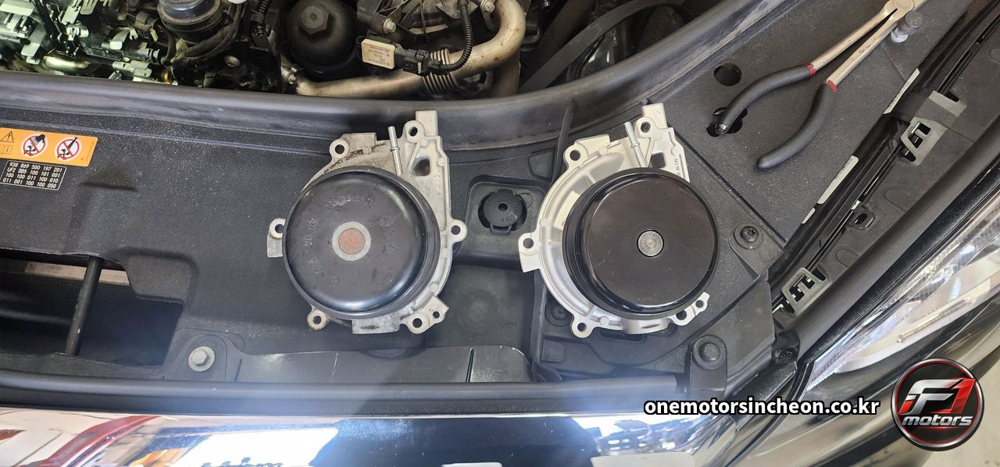
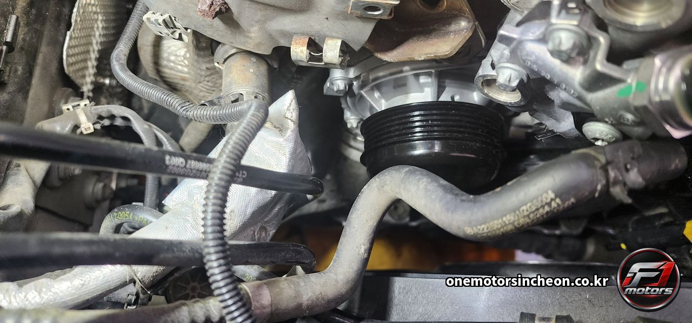
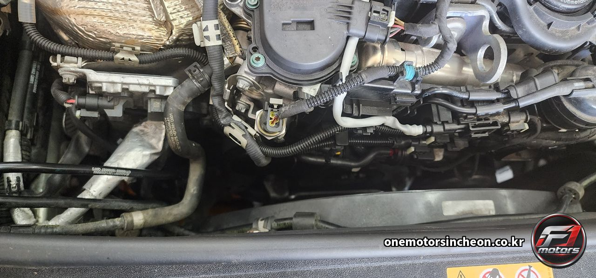
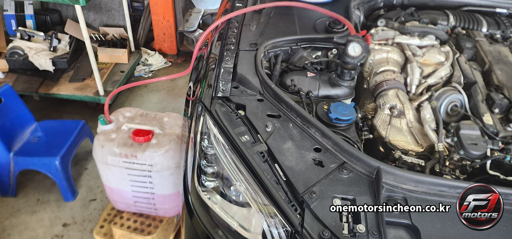
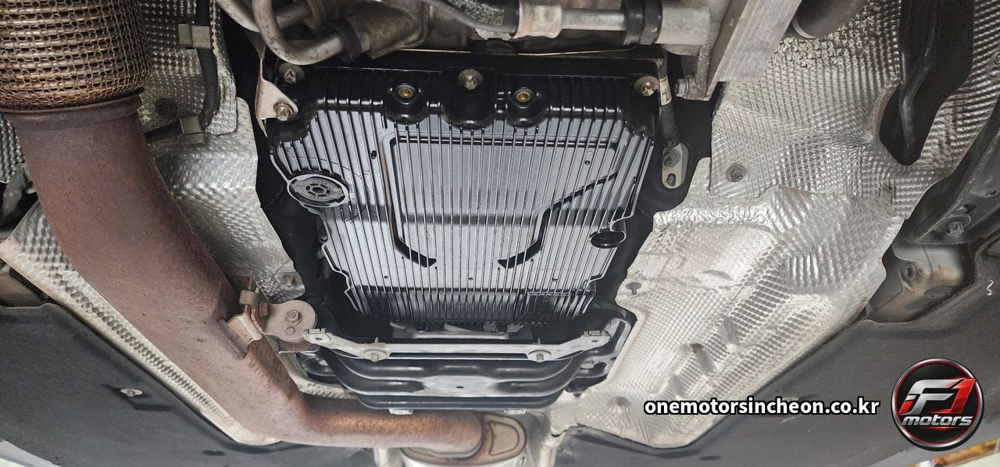
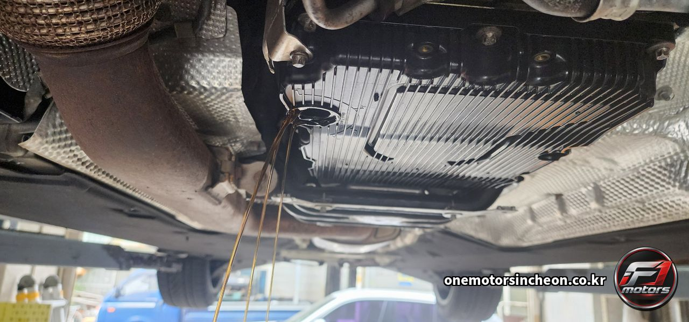
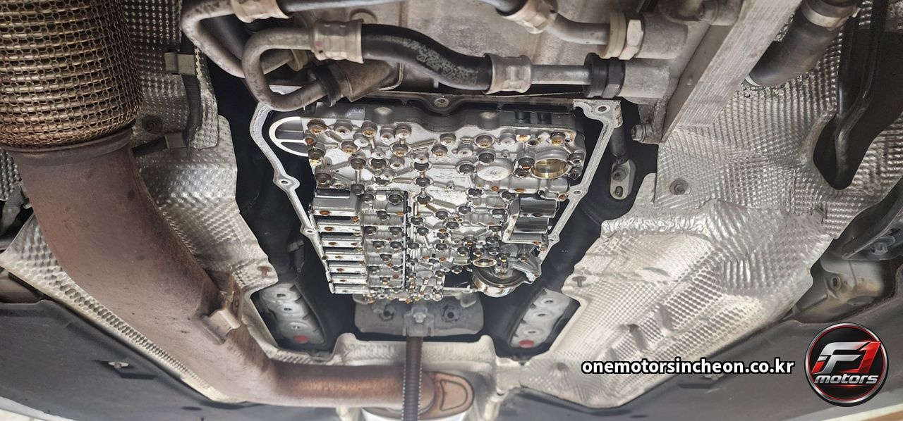
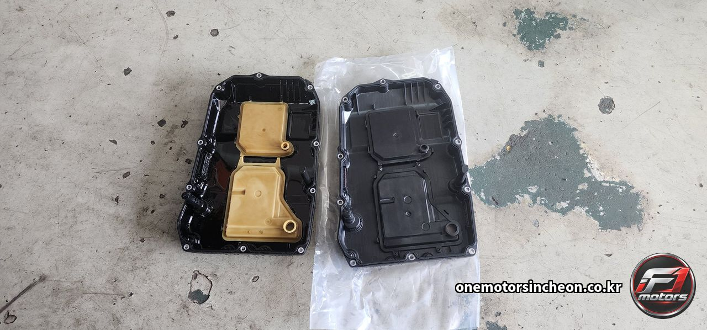
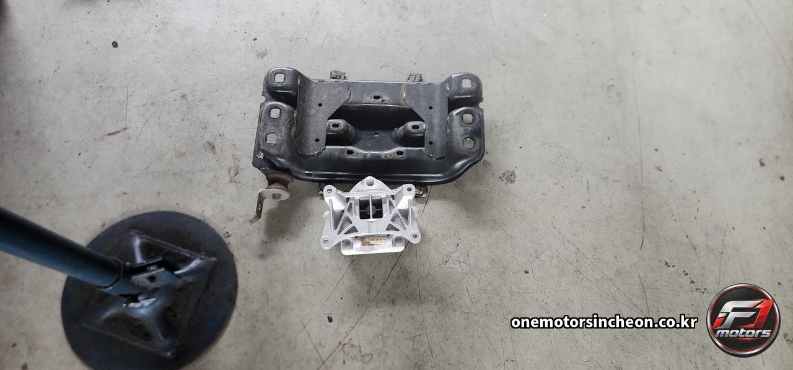
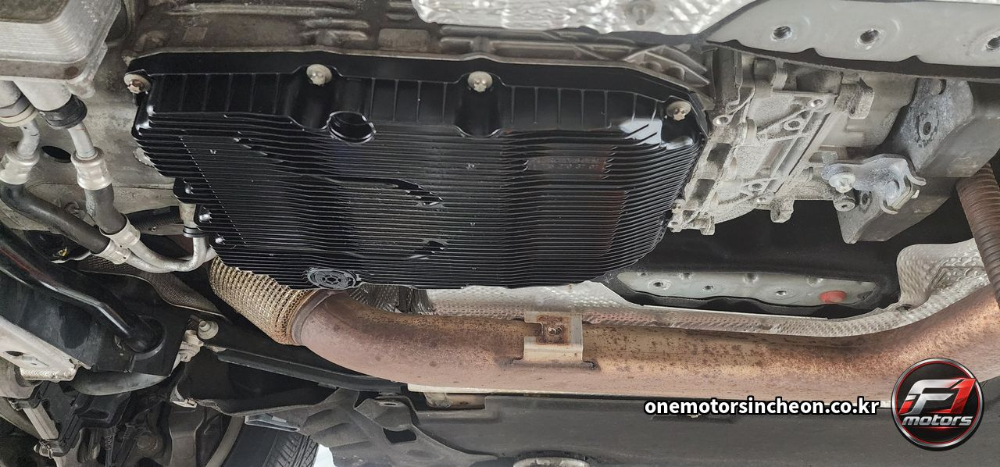
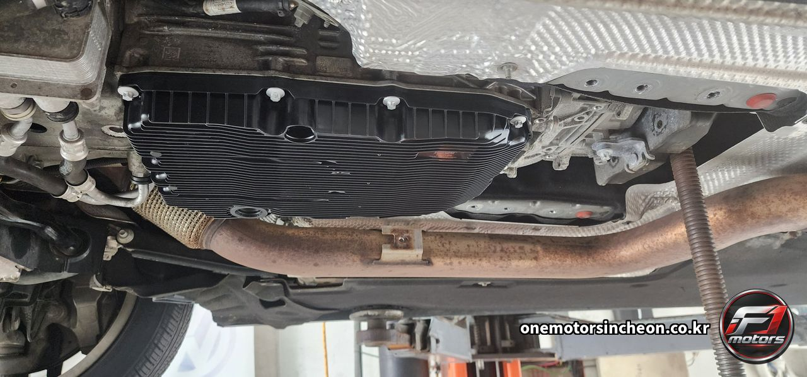
이런 증상으로 찾아오십니다
- 9단 자동변속기 오일 교환
- 9G-TRONIC 미션오일
- 벤츠 미션오일 교환
- 벤츠 자동변속기 오일팬
- 미션 오일팬 교환
- 필터 일체형 오일팬
- 자동변속기 필터 교환
- 미션오일 딥스틱 없음
- 유온 기준 레벨 조정
- 오버플로 플러그 레벨
- 변속기 오일 레벨 맞추기
- 밸브바디
- 미션 마운트 탈거
- 크로스멤버 탈거
- 벤츠 워터펌프 교환
- S클래스 워터펌프
- W222 워터펌프
- 벤츠 부동액 규격
- 부동액 섞으면 안 되나요
- 부동액 색 다른 거 넣어도 되나요
- 벤츠 냉각계통 에어빼기
- 변속할 때 울컥거려요
- 저속에서 변속 충격이 있어요
- 기어가 미끄러지는 느낌이에요
- 미션오일 갈았는데 금방 색이 어두워져요
- 미션오일은 무교환 아닌가요
- 17만km 벤츠 미션오일 갈아도 되나요
- 오일만 갈면 되나요 팬도 갈아야 하나요
- 자동변속기 필터만 따로 살 수 있나요
- 딥스틱 없는 미션 오일량 어떻게 맞추나요
- 미션오일 적으면 어떻게 되나요
- 수입차 자동변속기 정비
- 대형 세단 미션 정비
- 인천 벤츠 미션오일 교환
- 인천 자동변속기 오일 교환
- 인천 벤츠 워터펌프 교환
- 인천 수입차 변속기 정비
- 제물포구 자동차정비
- 인천 송림동 정비소
- F1모터스
- 인천에프원모터스
비슷한 증상이 있으시면 전화로 상담해 주세요. 차종과 연식, 증상만 알려주시면 예상 원인을 안내해 드립니다.
인천에프원모터스는 제조사 공식 서비스센터가 아닌 독립 정비업체입니다. 정비 내용은 차량 상태에 따라 달라질 수 있습니다.